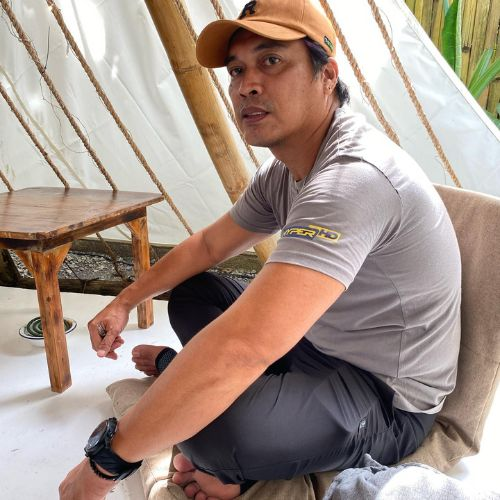

Older siblings play an important role in the lives of their younger siblings. Like parents, older brothers and sisters act as role models and teachers, helping their younger siblings learn about the world.


This is my family; We are five siblings in the family, and I am the fourth child. We don't have
oneand nottwobut three dogs in the family; one is 1 year old the other two is only 6 and 3 months old. I live with my mother, stepfather,and my three siblings, who have their own families.One of my brothers doesn't live in the same house with us, but whenever there are occasions, we still get together with him to bond. My family is big, and we have 10 family members together now. Family FTW!
Family probably has the most important influence on a child’s life from the first encounter with the world and first emotion subconsciously forming one’s own attitude and views. Since birth, our family influences our world view and guides us toward rational decision making, playing a big role in our development well into early adulthood.
My Mother and Stepfather
Parents are living gods. They do everything to make their children happy and expect nothing in return.–Saravana Kumar Murugan

My Older Siblings
They each have their own families and are currently employed. The first picture on the left is the oldest among us,
the second picture in the middle is my second oldest sibling and third picture on the right side is
Older siblings play an important role in the lives of their younger siblings. Like parents, older brothers and sisters act as role models and teachers, helping their younger siblings learn about the world.

Me and My Younger Brother
The age gap between me and my younger brother is one year. I am 19 years old born on year 2003 while him is 18 years old born on year 2004.
My younger brother and me has a lot of common things
that we like and this these are:


Our Dogs
Our dog's name is Chiko,Chichai, and Cholo. Chiko is an aspin and he is 1 year old. Chichai's breed is shih tzu, she is 6 months old while Cholo's breed is dachshund and he is 3 months old.
FAMILY is a group of two or more persons related by birth, marriage, or adoption who live together; all such related persons are considered as members of one family.
The importance of family love for emotional well being cannot be underestimated. The quality of family love experienced by a person affects them all the way from infancy through adolescence into adulthood. The psychology of love, as it occurs in the context of family, is unlike any other. They're the people that you can't live without, who you turn to when something good or bad happens.
| Names: | Age |
|
|